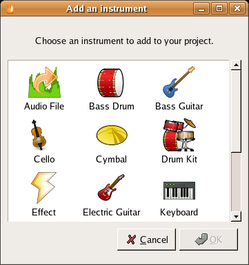

Jokosher User Guide
Written by Jono Bacon jono@jonobacon.org
Version 0.1 for Jokosher v0.1
This guide is licensed under the GNU General Public License, version 2.
Feel free to redistribute, copy and modify this guide within the remit
of the license. In fact, if something looks wrong or could be better
explained, write it and send it to us. See the Jokosher Getting Involved page for details.
CONTENTS
1. Welcome!
2. Installation
3. Getting Started
Creating a New Jokosher Project
Opening Jokosher Projects
The Main Jokosher Window
Adding Instruments
4. Configuring Jokosher Preferences
1. Welcome
Welcome to the start of an exciting journey!
Jokosher is a simple to use, yet devilishly powerful Open Source audio
workstation. With it you can create and record music, audio and other
projects. Jokosher has been specifically designed around ease of use
and helping you to ignore the software and concentrate on your
projects. We have taken every step to make it as intuitive as possible,
but naturally a user guide is always helpful in explaining the
specifics. This is that user guide.
Jokosher is an organic piece of software and grows and improves
gradually. Due to its Open Source foundation, different people from all
over the world work on it to make it the best tool for creating audio
and music easily. Likewise, this guide reflects that organic nature and
also grows naturally. This guide presents you with a complete guide to
the features and facilities available in Jokosher. As each new release
pops its head over the horizon, this guide will explain the awesome new
features you can use.
Like any Open Source project, Jokosher and this guide needs your
help. Invariably in most Open Source projects, the documentation always
falls behind and does not track the progress of the application it is
documenting. We really, really
don't want this to happen with Jokosher. Our lovingly crafted Jokosher
is made for musicians, and we want it to be simple and easy to use, and
this guide plays n essential role. If something is incorrect, outdated
or just plain broken, roll up your sleeves and fix it. It will be a
great contribution to this important project.
2. Installation
###FIXME###
3. Getting Started
Fire up Jokosher by selecting Applications -> Sound & Video -> Jokosher.
When Jokosher starts, you see the Welcome dialog shown in Figure 3-1:

Figure 3-1
The Welcome dialog box
The welcome dialog has a number of different facilities:
- Recent Projects - the
list of recent projects provide a simple means of accessing your most
recent projects, with the most recent ones at the top. To load a
project just double-click it.
- Create a New Project - click this button to create a new Jokosher project. See Creating a New Jokosher Project below.
- Browse for an Existing Project - this button pops up a file dialog box to allow you to find an existing project file on your computer. See Opening Jokosher Projects below.
- Preferences - clicking this button displays the main Jokosher preferences window. See Configuring Jokosher Preferences below for more details.
- Quit - click this to exit out of Jokosher.
You know, some people really hate welcome dialogs like this, so we plonked a nice fat Don't show this on start-up
tickbox. Tick it to never be pestered by the welcome dialog again.
There are a few cool things you can configure for Jokosher start-up,
see the Configuring Jokosher Preferences for the juicy bits.
So, which option did you pick? Well, lets run through them...
Creating a New Jokosher Project
You can create project by either selecting the Create a New Project button from the welcome dialog or by clicking File -> New Project in the main window.
A dialog box then appears and you are asked for some details:
- Project Name - enter a name for the project here. This is most likely going to be the song title or podcast title.
- Folder - select a folder
where your project is held. Please note that the folder you select will
have a new directory created for it. So, as an example, if you select /home/bob/projects for this option and you Project Name is Booya, a directory called booya inside /home/bob/projects is be created.
- Author - enter your name or the name of your band in this box. This is the author of the project.
When you have added these details, click the OK button to continue.
If this is your first time using Jokosher, jump to The Main Jokosher Window.
Opening Jokosher Projects
You can open existing projects by either selecting Browse for an Existing Project from the welcome dialog or clicking File -> Open in the main window.
When you select this option, the GNOME file picker pops up. Jokosher
projects are stored in a directory with the same name as the project.
Inside that directory is a .jokosher file. Double click it to load it.
If this is your first time using Jokosher, jump to The Main Jokosher Window.
The Main Jokosher Window
The main Jokosher window is where the action happens (Figure 3-2):

Figure 3-2
The main Jokosher screen
Unlike other less fun and fabulous multi-trackers, Jokosher does not
inflict lots of itty-bitty windows on you. Here everything happens
inside a single window, making it simple to see what is going on at any
one time.
Along the top side of the screen you can see a bunch of menus. You can
find virtually everything in those menus, and if you are stuck figuring
out how to do something, flick through the menus. Below the menus are
the main toolbar buttons. These buttons are nice and big to help you
when perched over your desk holding your guitar. They do a bunch of
interesting things:
- Add Instrument - click this button to add an instrument to the project. See Adding Instruments.
- Rewind, Play, Forward, Record - these buttons control playback
###FIXME###
The Workspaces
###FIXME###
Adding Instruments
###FIXME###

Figure 3-3
Adding instruments is simple
Configuring Jokosher Preferences
###FIXME###